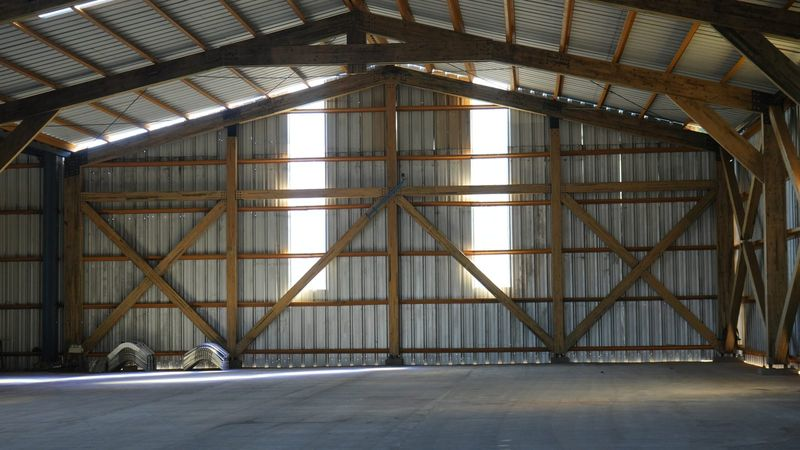
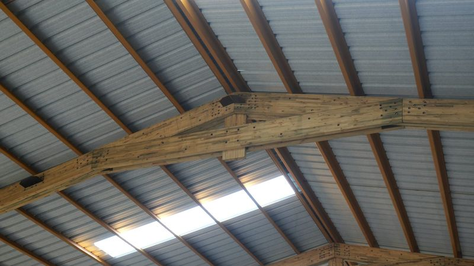
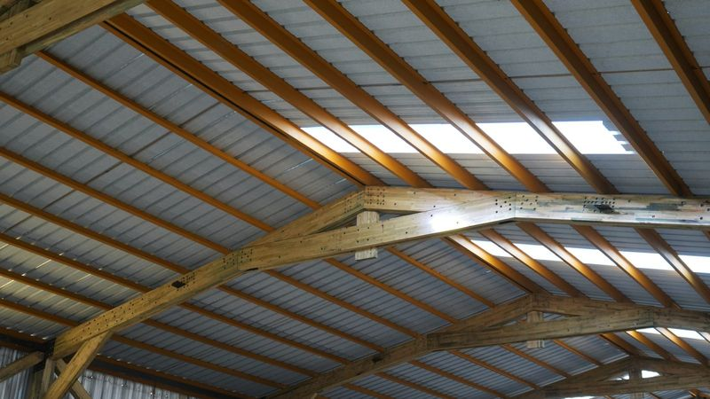
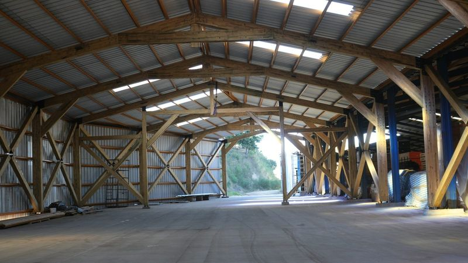
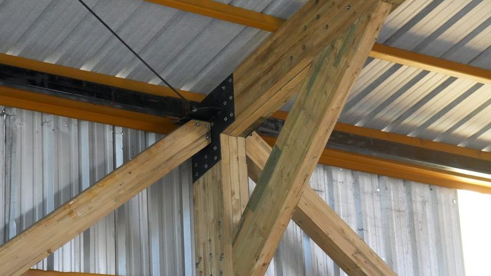

elementor/madera-material-construccion.json.Construcción en madera
La madera lleva siglos siendo parte de la construcción. Lo que ha cambiado es la ciencia detrás de ella. Hoy, con tecnología de fabricación de alta precisión y profundo conocimiento de sus propiedades estructurales, la madera de ingeniería compite de igual a igual con el hormigón y el acero, y los supera en varios aspectos críticos para la construcción actual.
Fabricación de vigas laminadas en la planta de Coelemu.
Ligereza estructural. Mucho más liviana que el hormigón y el acero: reduce las cargas sobre las fundaciones y su costo. Determinante al añadir plantas sobre edificios existentes.
Prefabricación y velocidad. Los componentes llegan a obra prácticamente terminados. Se eliminan los tiempos de fraguado y curado, y el plazo se acorta en semanas o meses.
Menor costo total de obra. Menos tiempo de obra, menos mano de obra en terreno, fundaciones más simples y menos equipamiento logístico. El ahorro es concreto y medible.

Muro tradicional
Muro portante grueso
Muro en madera laminada
Muro portante esbelto
A igual huella, un muro portante más esbelto deja más metros cuadrados interiores aprovechables. La proporción exacta depende del sistema constructivo y del cálculo de cada proyecto.

Resistencia técnica superior. En relación a su peso propio soporta cargas muy superiores a las del acero, y su resistencia a la compresión es comparable a la del hormigón armado.
Resistencia a la torsión. La orientación alternada de las fibras en cada lámina neutraliza las tensiones internas y mantiene la geometría de la pieza bajo cargas dinámicas.
Comportamiento sísmico. Criterio no negociable en Chile. Su flexibilidad, unida al bajo peso y la alta resistencia, absorbe y disipa la energía del sismo con eficiencia.
Comportamiento ante el fuego. Mejor que el acero: forma una capa superficial de carbón que aísla el núcleo y mantiene la capacidad portante mucho más tiempo que una viga metálica.



Versatilidad arquitectónica. Grandes luces sin apoyos intermedios y estructuras curvas. El elemento estructural es a la vez terminación: la madera a la vista pasa a ser parte del diseño.
Soluciones híbridas. Combinada con hormigón, acero y vidrio, es integrable en casi cualquier concepto arquitectónico, tanto en obra nueva como en renovación.
Tratamiento de impregnado. Aplicado en planta, eleva la durabilidad estructural. Apto para zonas de alta humedad, exteriores y ambientes industriales corrosivos.
Certificación FSC. Las vigas laminadas de Forestal León cuentan con certificación FSC, el sello que garantiza madera de bosques gestionados de forma responsable.